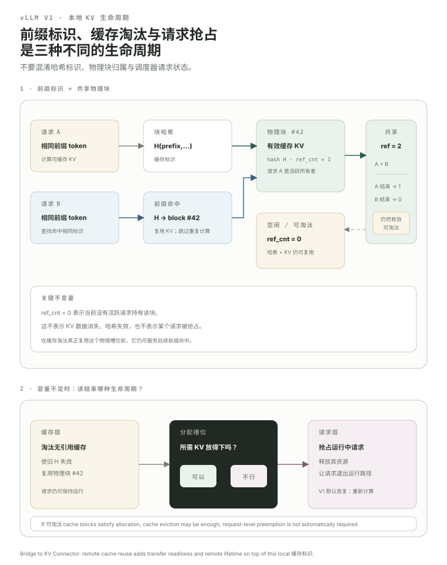

Prefix Cache 与 Preemption：KV block 不只会“分配和释放”，还会被复用、共享、缓存和淘汰。
到 07.4 为止，我们已经能解释一个 request 怎样申请 blocks、怎样用 block table 做 attention。但 serving 还有两个非常现实的问题：多个请求可能共享相同前缀；Key-Value (KV，键-值) 池又不可能无限大。于是 block 需要 identity、hash、reference count、free/eviction order，scheduler 也需要在资源压力下 preempt 请求。这里补齐 vLLM 本地 KV 生命周期，下一模块再把问题扩展到“KV 在另一台机器上”。
- 解释 prefix caching 为什么能省 prefill compute，而不是“凭空减少模型权重”。
- 理解标准 Automatic Prefix Caching (APC，自动前缀缓存) 为什么按可缓存 hash block 识别 prefix，以及 shared blocks 为什么需要 ref count。
- 知道 cached block 可以不属于任何 running request，却仍然留在 free/evictable cache 中等待复用。
- 理解 eviction 与 preemption 的区别：一个结束 cache identity 的寿命，一个改变 request 的运行状态/进度安排。
- 知道当前 V1 默认 preemption 恢复方式是 RECOMPUTE，而不是 SWAP。
- 知道当前 V1
RequestStatus已包含WAITING_FOR_REMOTE_KVS，说明 remote KV 已进入 scheduler 状态机。
两个请求前 1000 个 tokens 一模一样，第二个请求没必要再算一遍相同 Prefill。
例如很多用户都以同一段 system prompt 开头，或者同一个长文档被重复问不同问题。若某段可缓存 prefix 的 KV 已经存在，后续请求可以直接把这些 token 视作“already computed”，只计算未命中的 suffix。
先把这一课最容易混淆的三种生命周期放到同一张图里：prefix identity 决定能不能复用，physical block ownership 决定现在谁还在引用，request scheduling 决定资源不够时是否需要 preempt。

因此 prefix cache 的收益主要是减少重复 Prefill compute 和 Time To First Token (TTFT，首 Token 延迟)；它并不让同一份 KV 数据“零占显存”。共享 block 仍然是物理 KV memory，只是多个请求可以引用同一份。
系统必须有办法判断“这块 KV 对应的 token prefix 是否真的一样”。
标准 Automatic Prefix Caching 的教学规则仍然是“缓存完整 hash blocks”：block hash 会包含 parent hash、当前 block tokens，以及 LoRA / multimodal / cache salt 等必要额外信息。当前 KVCacheBlock 内部还记录 group-aware hash 和 _block_hash_num_tokens，说明现代 V1 的 hash granularity、physical allocation block、hybrid cache group 已经不应被当成永远一一等同。
先学稳定语义，不要绑死内部尺寸。“相同 prefix → 可验证 hash identity → 找到可复用 KV”是核心；physical KV block size、hash block size、attention kernel block size 在当前 V1 可能是不同层级的概念。
一块 prefix KV 可能同时被多个 running requests 引用，所以不能谁结束就立刻覆盖。
A only#21
B only#9
free#12
free#7
C only#5
free
如果 A、B、C 都共享 block #42，A 完成只能让 ref count 减 1；只有没有活跃引用时，这个 block 才可能进入可回收/可淘汰状态。ref_cnt 就是把“物理 block 的生命周期”从某个单独 request 解耦出来。
一个 block 可以不再被 running request 使用，但仍保留有效 cached KV，等待下一次 prefix hit。
这是很容易混淆的一点。当前 BlockPool 的注释直接说明：cached block 既可能被 running request 使用，也可能已经位于 free_block_queue、等待未来命中或 eviction。也就是说，free queue 是“可以重新分配”的资源顺序，不等于“里面的数据已经被擦掉”。
KV pool 满了时，系统首先要问：有没有不再被引用、但只是“为了缓存”留着的 block 可以覆盖？
当前 free-block queue 明确维护 eviction order：最少最近使用的 block 在队头；同一次序下，hash 覆盖更多 tokens、位于 block chain 尾部的 block 更靠前被淘汰。你不需要背双向链表实现，但要理解 cache 的基本 trade-off：
如果可复用/可淘汰 block 仍不够，scheduler 才可能让正在运行的 request 暂时退出。
Preemption 和 eviction 不在同一个层级。Eviction 是“这个无活跃引用的 cached physical block 还值不值得保留”；preemption 是“这个 running request 现在还能不能继续占资源运行”。当前 scheduler 在 allocate_slots() 无法满足 running request 时有明确的 victim-selection / preempt path。
当前 vLLM V1 的优化文档明确写明默认 preemption mode 是 RECOMPUTE，而不是 SWAP，因为 V1 中 recomputation 的开销更合适。Serving 质量因此不能只看“有没有 Out Of Memory (OOM，内存不足/显存不足)”：频繁 preempt 会反复消耗 Prefill/forward 算力，并恶化 latency tail。
现在看当前 V1 的 RequestStatus，已经能提前看到 KV Connector。
WAITING → RUNNING → finishedPREEMPTEDWAITING_FOR_REMOTE_KVS这很关键：一旦 KV 可以来自外部节点，scheduler 不能只问“本地有没有 block”。它还要知道远端命中了多少 tokens、数据是否已到、什么时候才能把 request 放进 runnable batch。
到这里，本机 KV 管理已经完整；但 P/D 分离会把“物理 block 在哪”扩展到另一台机器。
metadata must agree →
注意这已经不是简单 torch.copy 问题：你要决定哪些 tokens 命中、传哪些 layers/blocks、什么时候发起、怎样知道完成、scheduler 在等待期间是什么状态、接收端 block IDs 怎么对应本地 KV layout。
这就是 08 · KV Connector 的起点：把我们在本机学会的“KV 生命周期 + block metadata + scheduler state”跨进程、跨 GPU、跨节点延伸。
完成 07 后，你第一次应该能有目的地读源码。
vllm/v1/core/sched/scheduler.py下一模块会特别关注 KVConnector factory/role/metadata 与 failure policy。打开源码 ↗vllm/v1/core/kv_cache_utils.pyref count、group-aware hash、free-list state。打开源码 ↗vllm/v1/request.pyWAITING / RUNNING / PREEMPTED / WAITING_FOR_REMOTE_KVS。打开源码 ↗完成这一关，你已经具备读 KV Connector 的地基。
WAITING_FOR_REMOTE_KVS 后，scheduler 已经不再是纯本机问题？本课出现的缩写与术语
第一次在正文使用时采用 English Full Name (ABBR，中文名)；这里集中复习，避免学习时来回跳总站 Glossary。
| 缩写 | English full name | 中文名 | 本课怎么理解 |
|---|---|---|---|
KV | Key-Value | 键-值 | 自回归 Attention 需要复用的历史 Key/Value 状态。 |
APC | Automatic Prefix Caching | 自动前缀缓存 | vLLM 中复用完整缓存 block 的前缀缓存机制。 |
TTFT | Time To First Token | 首 Token 延迟 | 从请求进入系统到第一个输出 token 可见的端到端时间。 |
OOM | Out Of Memory | 内存不足/显存不足 | 所需内存超过可用容量时的失败状态。 |
GPU | Graphics Processing Unit | 图形处理器 | 大模型训练与推理中执行 GEMM、Attention 等高并行计算的主要设备。 |